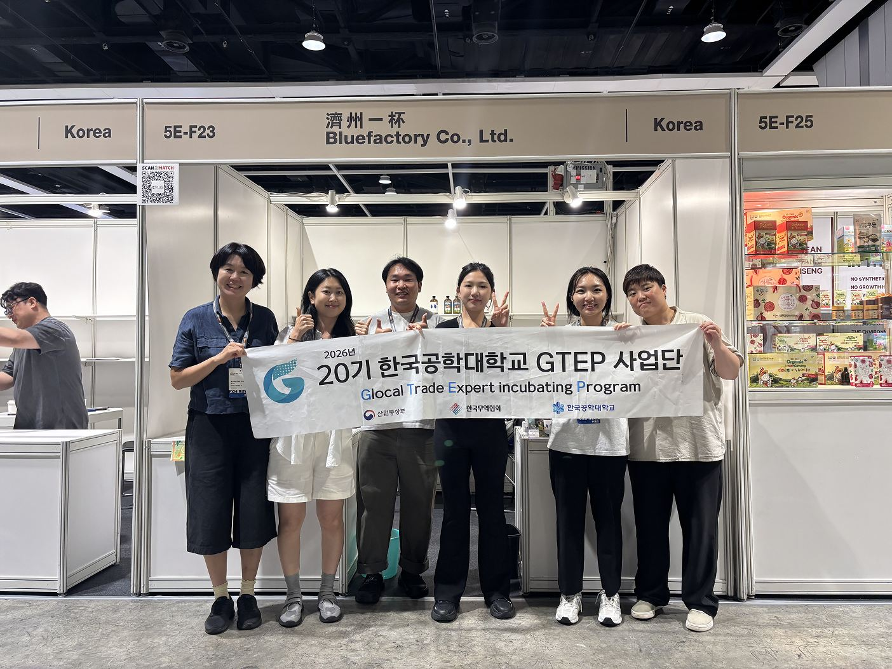
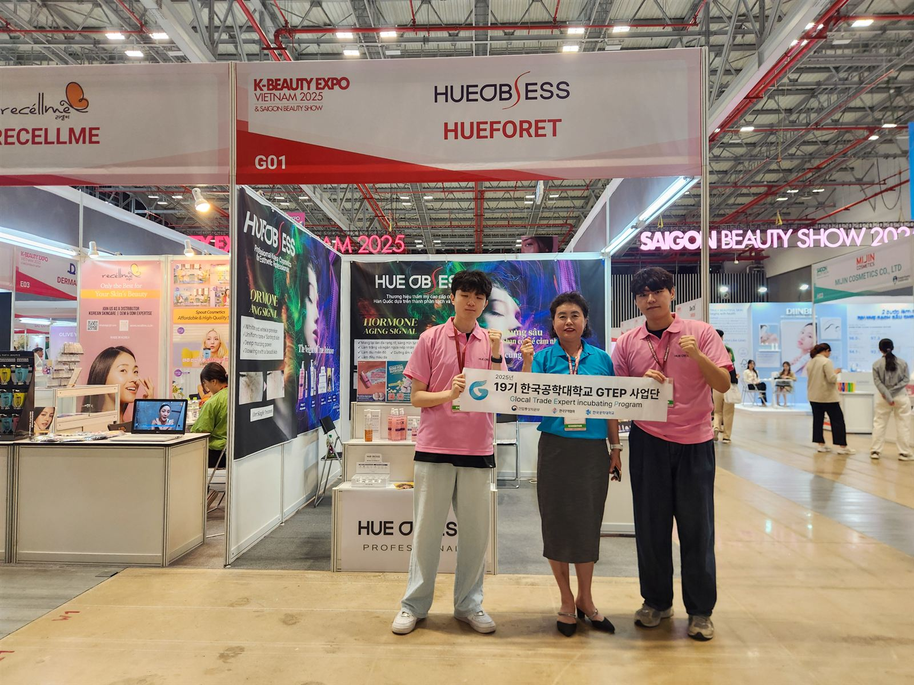
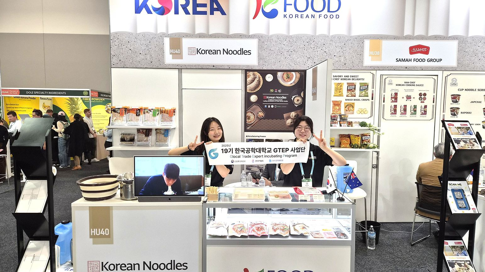
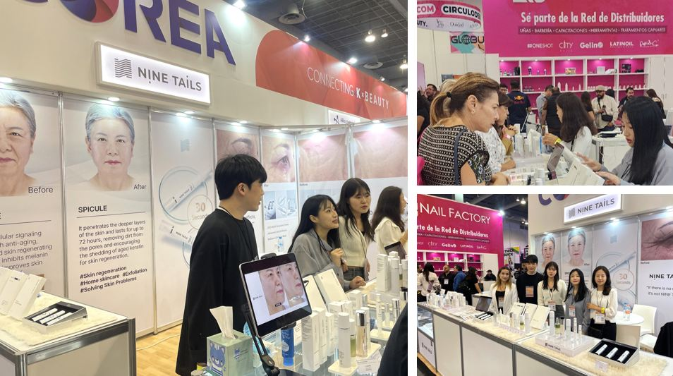
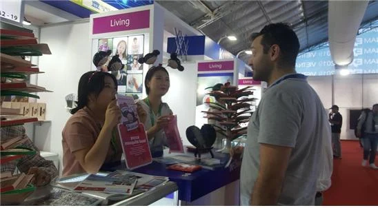
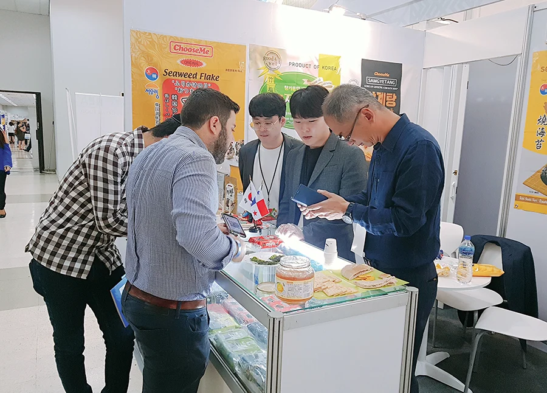

활동소식·해외전시회 기록
해외전시회와 산학협력 활동을 사진으로 모았습니다. 사진을 누르면 현장 기록을 볼 수 있습니다.
2026 현장 기록
 자카르타 · 2026SIAL Food & Drinks Indonesia
자카르타 · 2026SIAL Food & Drinks Indonesia 도쿄 · 2026세계 스페셜티 커피 전시회 SCAJ
도쿄 · 2026세계 스페셜티 커피 전시회 SCAJ 말레이시아 · 2026코스모뷰티 말레이시아
말레이시아 · 2026코스모뷰티 말레이시아 린이 · 2026중국 라이브 전자상거래 박람회
린이 · 2026중국 라이브 전자상거래 박람회 라스베이거스 · 2026CES 2026
라스베이거스 · 2026CES 2026
HONG KONG · USA · 2026홍콩 Food Expo PRO·미국 KCON USA에서 수출마케팅 실무 INDIA · 2026인도 KoINDEX 2026에서 시흥 기업의 무역 실무를 맡다
INDIA · 2026인도 KoINDEX 2026에서 시흥 기업의 무역 실무를 맡다 PHILIPPINES · 2026필리핀 PhilMedical Expo, 시흥 기업과 의료시장 공략
PHILIPPINES · 2026필리핀 PhilMedical Expo, 시흥 기업과 의료시장 공략 AUSTRALIA · JAPAN · 2026호주 멜버른·일본 도쿄 박람회에서 해외시장 개척 지원
AUSTRALIA · JAPAN · 2026호주 멜버른·일본 도쿄 박람회에서 해외시장 개척 지원지난 현장 기록
 MALAYSIA · 2025K-뷰티 엑스포 말레이시아, 시흥 기업 휴포레와 참가
MALAYSIA · 2025K-뷰티 엑스포 말레이시아, 시흥 기업 휴포레와 참가 MEXICO · 2025멕시코 EBS 2025, 학생들이 직접 부스를 운영하다
MEXICO · 2025멕시코 EBS 2025, 학생들이 직접 부스를 운영하다
VIETNAM · 2025K-뷰티 엑스포 베트남 2025, 현지에서 경쟁력을 알리다 CHILE · 2025칠레 식품박람회에서 K-푸드 시장을 확인하다
CHILE · 2025칠레 식품박람회에서 K-푸드 시장을 확인하다
AUSTRALIA · 2025호주 시드니 국제 식품박람회, 후속 미팅으로 이어지다
MEXICO · 2024멕시코 뷰티엑스포(EBS) 2024, 중남미 특화 사업단의 현장 JAPAN · 2023일본 Medical Japan 2023, 의료기기 기업과 함께
JAPAN · 2023일본 Medical Japan 2023, 의료기기 기업과 함께 HONG KONG · 2023홍콩 식품 전시회 2023, 가족회사의 해외 판로 지원
HONG KONG · 2023홍콩 식품 전시회 2023, 가족회사의 해외 판로 지원 시흥 · 2023컨택틱 산학협력 업무협약
시흥 · 2023컨택틱 산학협력 업무협약
베트남 · 2019VIETNAM EXPO 2019
파나마 · 2019EXPOCOMER 2019